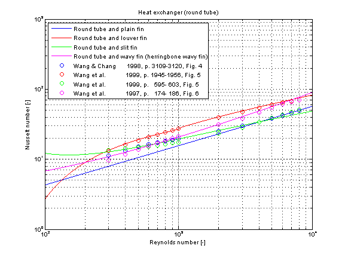

Modelica.Fluid.Dissipation.Utilities.SharedDocumentation.HeatTransfer.HeatExchanger
Modelica.Fluid.Dissipation.Utilities.SharedDocumentation.HeatTransfer.HeatExchanger
Modelica.Fluid.Dissipation.Utilities.SharedDocumentation.HeatTransfer.HeatExchanger
| Name | Description |
|---|---|
Modelica.Fluid.Dissipation.Utilities.SharedDocumentation.HeatTransfer.HeatExchanger.kc_flatTubeCalculation of the mean convective heat transfer coefficient kc for the air-side heat transfer of heat exchangers with flat tubes and several fin geometries.
There are basically three differences:

The mean convective heat transfer coefficient kc for heat exchanger is calculated through the corresponding Coulburn factor j :
j = f(geometry, Re)
with the resulting mean convective heat transfer coefficient kc
kc = j * Re_L_p * Pr^(1/3) * lambda / L_p (Louver fin)
or
kc = j * Re_D_h * Pr^(1/3) * lambda / D_h (Rectangular offset strip fin)
with
| D_h | as hydraulic diameter [m], |
| kc | as mean convective heat transfer coefficient [W/(m2K)], |
| lambda | as heat conductivity of fluid [W/(mK)], |
| L_p | as louver pitch [m], |
| Nu_D_h = kc*D_h/lambda | as mean Nusselt number based on hydraulic diameter [-], |
| Nu_L_p = kc*L_p/lambda | as mean Nusselt number based on louver pitch [-], |
| Pr = eta*cp/lambda | as Prandtl number [-], |
| Re_D_h = rho*v*D_h/eta | as Reynolds number based on hydraulic diameter [-], |
| Re_L_p = rho*v*L_p/eta | as Reynolds number based on louver pitch [-], |
The mean Nusselt number Nu representing the mean convective heat transfer coefficient kc is shown below for different fin geometries at similar dimensions.

Extends from Modelica.Icons.Information (Icon for general information packages).
Modelica.Fluid.Dissipation.Utilities.SharedDocumentation.HeatTransfer.HeatExchanger.kc_roundTubeCalculation of the mean convective heat transfer coefficient kc for the air-side heat transfer of heat exchangers with round tubes and several fin geometries.
There are basically three differences:

The mean convective heat transfer coefficient kc for heat exchanger is calculated through the corresponding Coulburn factor j :
j = f(geometry, Re)
with the resulting mean convective heat transfer coefficient kc
kc = j * Re * Pr^(1/3) * lambda / D_c
with
| D_c | as fin collar diameter [m], |
| kc | as mean convective heat transfer coefficient [W/(m2K)], |
| lambda | as heat conductivity of fluid [W/(mK)], |
| Nu = kc*D_c/lambda | as mean Nusselt number [-], |
| Pr = eta*cp/lambda | as Prandtl number [-], |
| Re = rho*v*D_c/eta | as Reynolds number [-], |
The mean Nusselt number Nu representing the mean convective heat transfer coefficient kc is shown below for different fin geometries at similar dimensions.
Extends from Modelica.Icons.Information (Icon for general information packages).